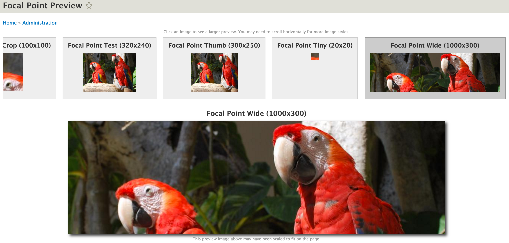
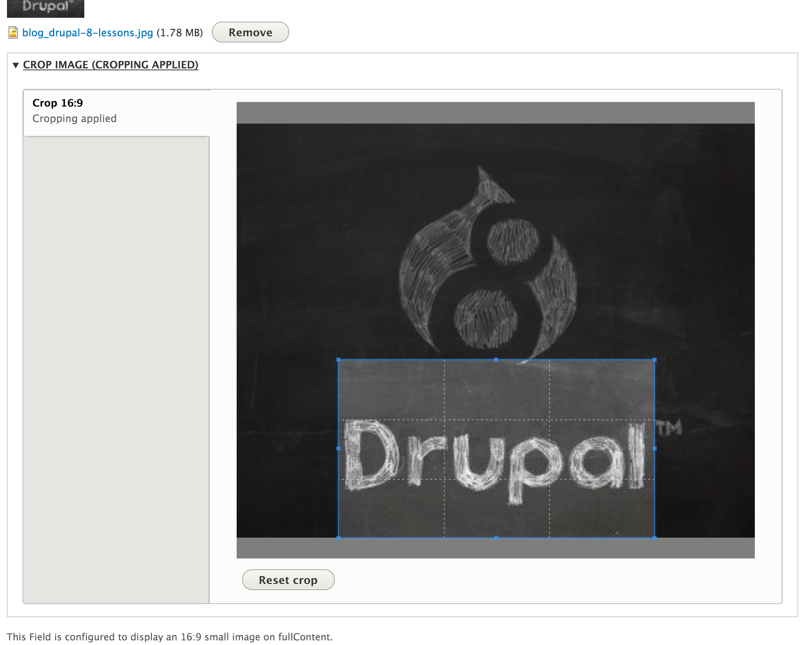

Image cropping in Drupal 8
Janez Urevc / @slashrsm / http://janezurevc.name
Alexander Ross / @bleen18 / http://bleen.net
Janez Urevc (@slashrsm)
- senior engineer and team lead at MD Systems
- Active member of Drupal community since 2009
- Lead of the D8 media initiative
- ex Examiner.com
Biggest company contributor

Source: drupal.org/drupal-services


I am always happy to help!
Alexander Ross
Drupal: @bleen | Twitter: @bleen18
- Director of Software Engineering at NBCUniversal
- Active member of Drupal community since 2006
- One of the organizers of Drupal NYC
- … always hiring
Gratuitous photo of my kid

Contents of the session
- What we learned in D7?
- Crop API
- UI modules in Drupal 8
- How to get involved
- Q&A
| Name | Installs | Latest release | D8 | D7 | D6 |
|---|---|---|---|---|---|
| Imagefield Crop | 28,664 | 2013-02 | No | Yes | Yes |
| Manual crop | 27,682 | 2015-04 | No | Yes | No |
| IMCE crop | 14,662 | 2013-12 | No | Yes | Yes |
| Smart Crop | 8,156 | 2010-12 | No | Yes | Yes |
| ImageField Focus | 8,103 | 2011-11 | No | Yes | Yes |
| Focal Point | 7,708 | 2016-02 | Yes | Yes | No |
| Image javascript crop | 6,519 | 2011-09 | No | Yes | Yes |
| EPSA Crop | 6,301 | Unmaintained | No | Yes | Yes |
| SimpleCrop | 1,702 | 2015-04 | No | Yes | No |
| Media Crop | 920 | 2012-03 | No | Yes | No |
| Source: https://www.drupal.org/node/1179172 | |||||
What we learned
- A lot of modules with very different approaches to image cropping
- … but they all share a nearly identical strategy for storing the crop data
- … hard to switch between modules (custom migration needed)
- … waste of resources
Let's fix the situation for Drupal 8!
Crop API is born...
- Attempt to standardize cropping storage and image effects
- … uses Entity system - Crop is an entity
- … standard (swappable) storage
- … easy to work with
- … automated tests
- … basic image effects provided
- … bundlable
- … fieldable
- … drupal.org/project/crop
Create a Crop entity...
$crop = \Drupal\crop\Entity\Crop::create([
'type' => 'dummy_crop_type',
'entity_id' => $file->id(),
'entity_type' => $file->getEntityTypeId(),
'x' => '100',
'y' => '150',
'width' => '200',
'height' => '250',
]);
$crop->save();
Find and use a Crop entity...
$crop = \Drupal\crop\Entity\Crop::findCrop($uri, $crop_type);
$size = $crop->getSize();
$position = $crop->getPosition();
// Anchor (top-left corner) is calculated on the fly.
$anchor = $crop->getAnchor();
Other features...
- aspect ratio definition
- soft size limit
- hard size limit
Basic image effect
- finds crop and applies it
- can be chanied with other effects (scale & crop, scale, ...)
- can be overriden to achieve custom behaviour
- … or you can implement your own from scratch

Focal point
Allows editors to specify the most important part of an image before cropping occurs
[Demo]
Image widget crop
Image widget crop
- created by Alexandre Mallet - @woprrr
- Drupal 8 only
- uses Cropper - A simple jQuery image cropping plugin
- drupal.org/project/image_widget_crop
Demo
Roadmap
Crop API is pretty stable. We want to add support for rotation: #2691045
Our main objective at this point is supporting developers of UI modules.
Resources
- github.com/drupal-media
- groups.drupal.org/media
- Individual project pages and issue queues
- #drupal-media IRC
- @slashrsm - drupal.org/u/slashrsm
- @bleen - drupal.org/u/bleen
Thank you! Questions?
Janez Urevc / @slashrsm / http://janezurevc.name
Alexander Ross / @bleen18 / http://bleen.net